材料
※粉量を変えると自動計算されます
生地
トッピング
作り方
生地
STEP 1
水、ドライイースト、砂糖を混ぜる
水にドライイーストと砂糖を加えて、全体をよく混ぜ合わせます。あらかじめイーストを水になじませておくことで、粉と合わせたときに生地全体へ均一に行き渡りやすくなります。
水にドライイーストと砂糖を加えて、全体をよく混ぜ合わせます。あらかじめイーストを水になじませておくことで、粉と合わせたときに生地全体へ均一に行き渡りやすくなります。
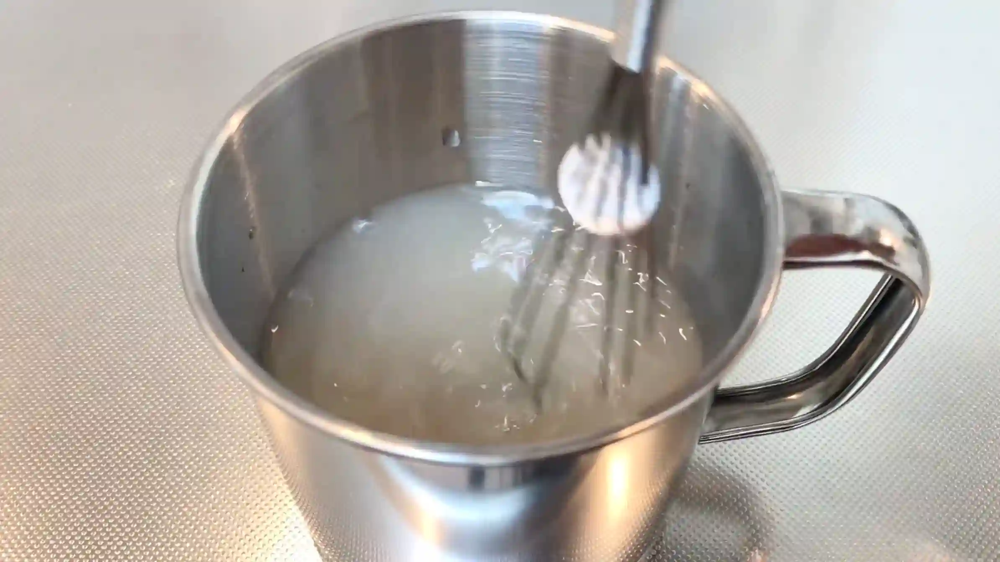
STEP 2
強力粉と塩を混ぜ、1を加えて、少しベタつきが出るまでヘラで混ぜる
フォカッチャは一般的なパン生地より水分が多く、最初はベタつきのある生地になります。ここでは無理に手でこねて生地をまとめようとせず、ヘラで粉気がなくなるまで全体を混ぜ合わせます。
フォカッチャは一般的なパン生地より水分が多く、最初はベタつきのある生地になります。ここでは無理に手でこねて生地をまとめようとせず、ヘラで粉気がなくなるまで全体を混ぜ合わせます。
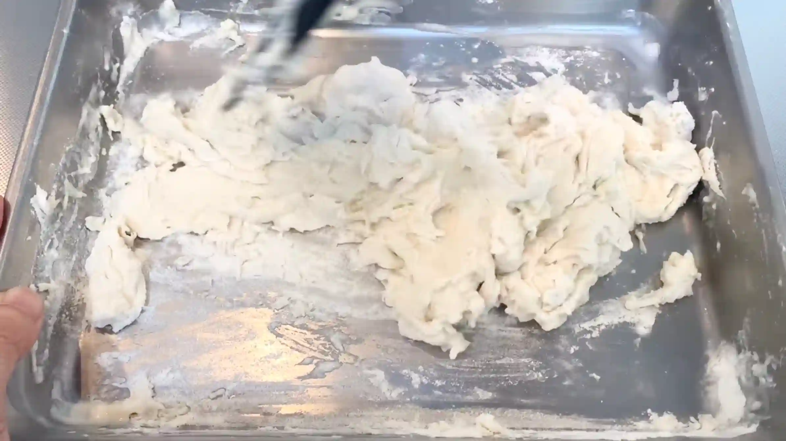
STEP 3
オリーブオイルを加え、オイルが馴染むまでヘラで混ぜる
オリーブオイルを加えることで、生地に風味とコクが加わり、焼き上がりもしっとりとした食感になります。最初は油分が生地になじみにくいため、ヘラで生地を返すように混ぜながら、全体にオイルが行き渡るまで混ぜます。
オリーブオイルを加えることで、生地に風味とコクが加わり、焼き上がりもしっとりとした食感になります。最初は油分が生地になじみにくいため、ヘラで生地を返すように混ぜながら、全体にオイルが行き渡るまで混ぜます。
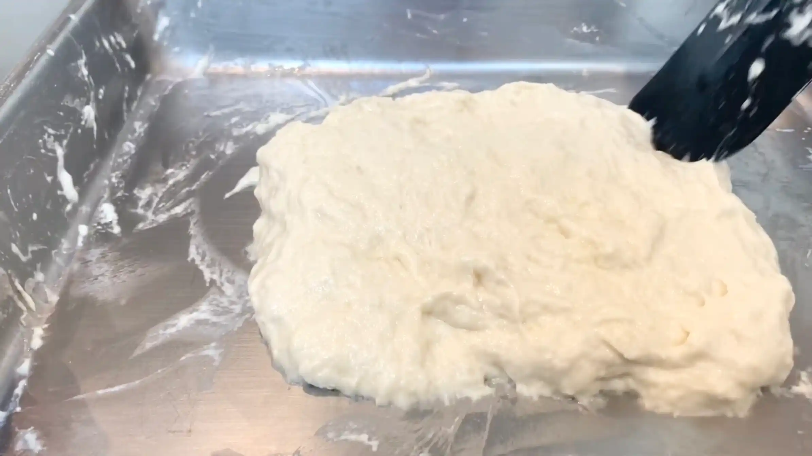
STEP 4
ラップをして、常温で30分おく
ここでは生地を休ませながら、発酵を進めます。水分の多い生地は、混ぜた直後はゆるく扱いにくくても、時間をおくことで粉が水分を吸収し、生地が少しずつまとまりやすくなります。
ここでは生地を休ませながら、発酵を進めます。水分の多い生地は、混ぜた直後はゆるく扱いにくくても、時間をおくことで粉が水分を吸収し、生地が少しずつまとまりやすくなります。
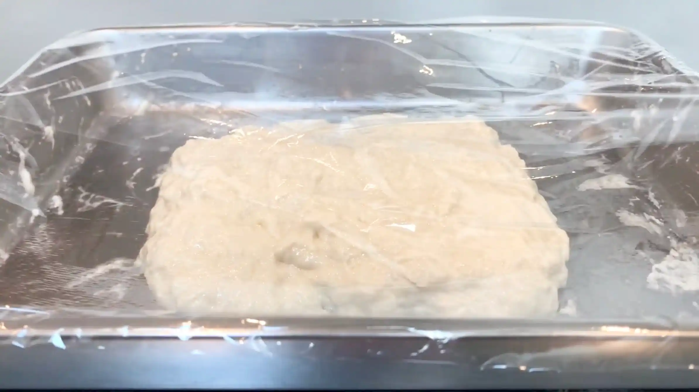
STEP 5
手を水で濡らし、生地を4方向から折り畳んで、常温で30分おく（1回目）[動画 01:38]
水分の多いフォカッチャ生地は、強くこねてグルテンを作るのではなく、折り畳むことで生地に弾力とまとまりを出していきます。手を水で濡らすと生地が手につきにくくなります。生地を4方向から持ち上げて中央へ折り畳み、全体を整えたら30分休ませます。
水分の多いフォカッチャ生地は、強くこねてグルテンを作るのではなく、折り畳むことで生地に弾力とまとまりを出していきます。手を水で濡らすと生地が手につきにくくなります。生地を4方向から持ち上げて中央へ折り畳み、全体を整えたら30分休ませます。
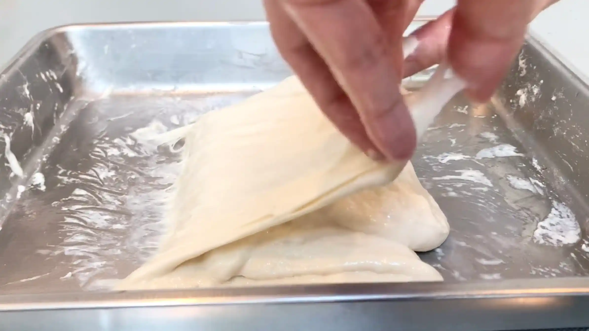
STEP 6
手を水で濡らし、生地を4方向から折り畳んで、常温で30分おく（2回目）[動画 02:25]
1回目の折り畳みよりも、生地に弾力が出て扱いやすくなってきます。生地を強く引っ張りすぎるとガスをつぶしてしまうため、やさしく持ち上げて折り畳みます。折り畳むことで生地のつながりが少しずつ強くなり、フォカッチャ特有のふんわりとした食感につながります。
1回目の折り畳みよりも、生地に弾力が出て扱いやすくなってきます。生地を強く引っ張りすぎるとガスをつぶしてしまうため、やさしく持ち上げて折り畳みます。折り畳むことで生地のつながりが少しずつ強くなり、フォカッチャ特有のふんわりとした食感につながります。
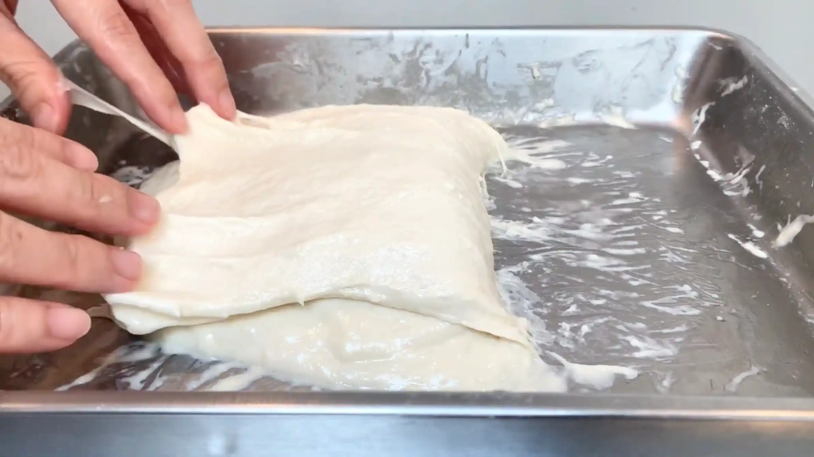
STEP 7
手を水で濡らし、生地を4方向から折り畳んで、常温で30分おく（3回目）[動画 03:07]
3回目の折り畳みでは、生地が最初よりもまとまり、ぷるんぷるんっとした質感になっています。ここでも気泡をできるだけつぶさないよう、やさしく折り畳みます。
3回目の折り畳みでは、生地が最初よりもまとまり、ぷるんぷるんっとした質感になっています。ここでも気泡をできるだけつぶさないよう、やさしく折り畳みます。
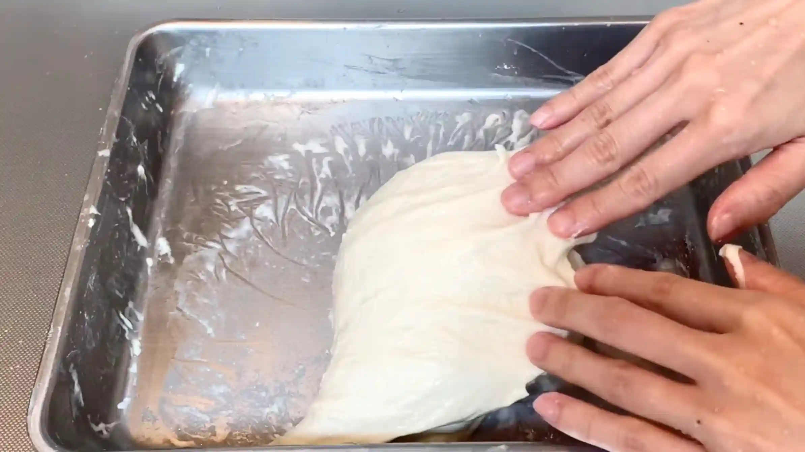
STEP 8
生地にオリーブオイルをかけてオーブンシートにのせ、ラップをして常温で90分おく
整った形に焼き上げたい場合は、ここで四角や円形に成形してオーブンシートにのせます。ただ、水分が多くベタつく生地を成形するのは少し難しいため、生地の扱いに慣れていない場合は、そのままオーブンシートの上にそっと生地をのせます。ここでは生地を無理に伸ばしたり畳んだりせず、発酵によって自然に広がる力を利用しながら形を整えるのがおすすめです。生地が十分に膨らんでいるかを確認しながら次の工程へ進みます。
整った形に焼き上げたい場合は、ここで四角や円形に成形してオーブンシートにのせます。ただ、水分が多くベタつく生地を成形するのは少し難しいため、生地の扱いに慣れていない場合は、そのままオーブンシートの上にそっと生地をのせます。ここでは生地を無理に伸ばしたり畳んだりせず、発酵によって自然に広がる力を利用しながら形を整えるのがおすすめです。生地が十分に膨らんでいるかを確認しながら次の工程へ進みます。
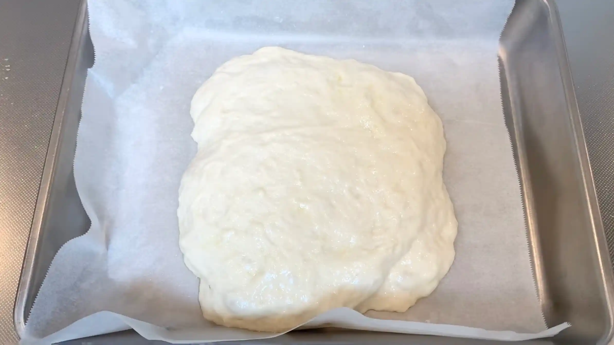
STEP 9
にんにくを炒める
にんにくはこの後オーブンでさらに加熱されるため、ここでは焼き色をつけすぎないのがポイントです。炒める段階で火を通しすぎると、焼成時に表面が焦げやすくなります。軽く炒める程度にするか、にんにくを少し厚めに切っておくと、焼き上がりまで香ばしさとにんにくの風味を楽しみやすくなります。
にんにくはこの後オーブンでさらに加熱されるため、ここでは焼き色をつけすぎないのがポイントです。炒める段階で火を通しすぎると、焼成時に表面が焦げやすくなります。軽く炒める程度にするか、にんにくを少し厚めに切っておくと、焼き上がりまで香ばしさとにんにくの風味を楽しみやすくなります。
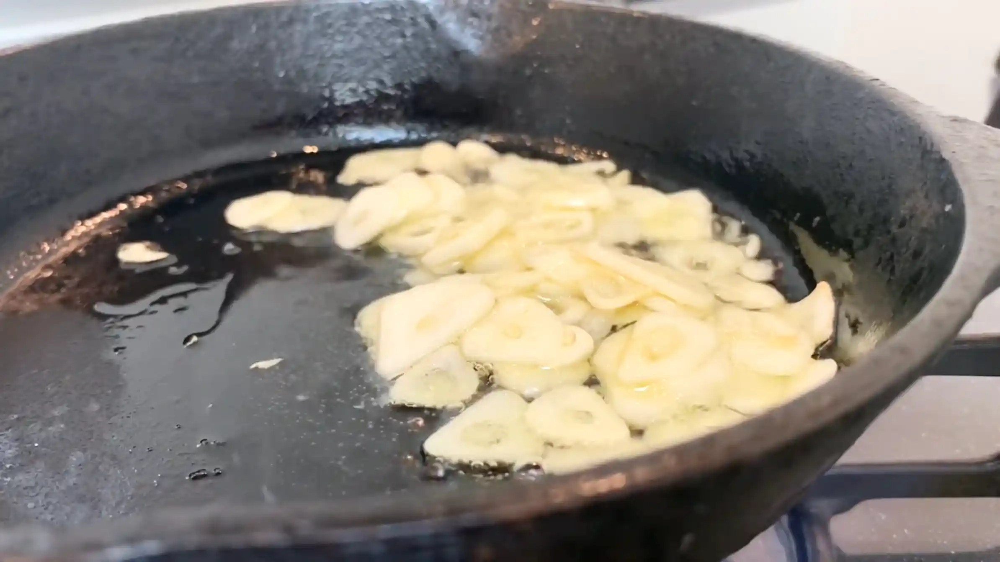
STEP 10
天板を入れたオーブンを210℃に予熱する
フォカッチャは高めの温度で焼くことで、表面を香ばしく焼きながら、生地の中をふんわりと仕上げます。
フォカッチャは高めの温度で焼くことで、表面を香ばしく焼きながら、生地の中をふんわりと仕上げます。
STEP 11
生地に指でくぼみを作り、にんにくを乗せる
生地にくぼみを作ることで、オリーブオイルがたまりやすくなり、表面を香ばしく焼き上げることができます。くぼみににんにくを乗せることで、焼いている間ににんにくの風味も生地になじみます。
生地にくぼみを作ることで、オリーブオイルがたまりやすくなり、表面を香ばしく焼き上げることができます。くぼみににんにくを乗せることで、焼いている間ににんにくの風味も生地になじみます。
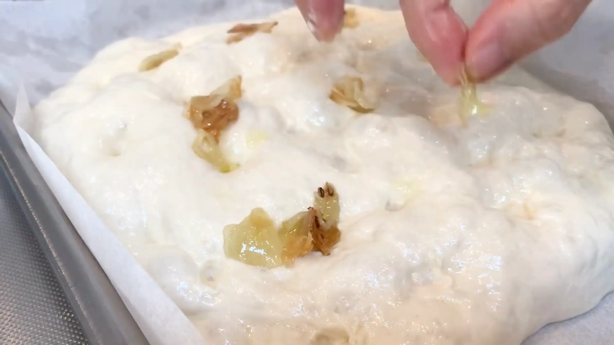
STEP 12
オーブン210℃で20分焼く
表面がこんがりと色づくまでしっかり焼き上げます。にんにくは焦げやすいため、途中で表面の焼き色を確認し、焼きすぎないよう注意します。（ちなみに私は焼きすぎてにんにくが全部焦げてしまいましたが、それでも風味はしっかり残っていました）焼き時間や温度は目安とし、ご家庭のオーブンによってご調整ください。
表面がこんがりと色づくまでしっかり焼き上げます。にんにくは焦げやすいため、途中で表面の焼き色を確認し、焼きすぎないよう注意します。（ちなみに私は焼きすぎてにんにくが全部焦げてしまいましたが、それでも風味はしっかり残っていました）焼き時間や温度は目安とし、ご家庭のオーブンによってご調整ください。
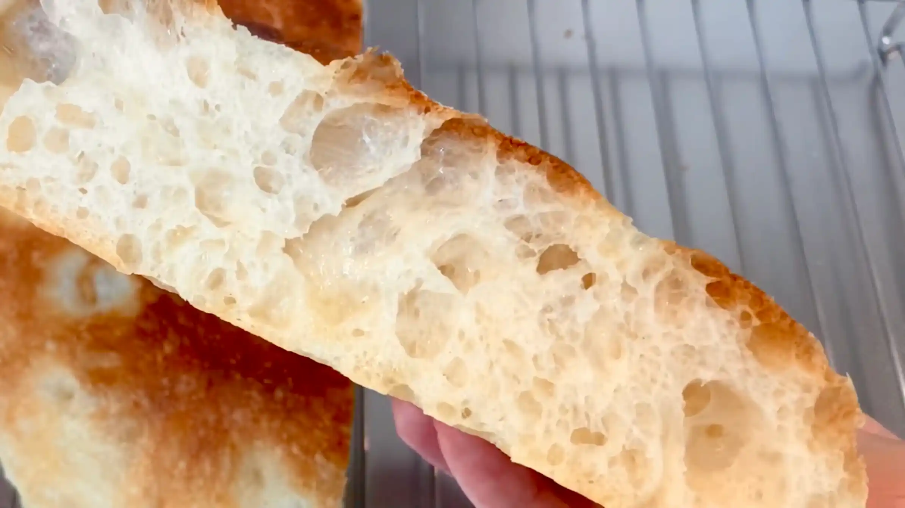
動画でチェック
おいしく作るためのワンポイントコラム
捏ねないで作れるパンは、手軽で気楽に挑戦できるのが嬉しいですよね。生地を手でびろ〜んと伸ばしたり、指で穴をあけたりする作業がとっても楽しい、私も大好きな『ガーリックフォカッチャ』！小麦の旨味と豊かな食感を引き出す、3つのコツをまとめました。
① 捏ねない生地のコツ
今回のフォカッチャは捏ねる必要がなく、四方から生地を折りたたむパンチを加えるだけでOKです。このシンプルな数回のパンチで生地を繋ぎ、あとはしっかりと発酵時間をとることで、小麦本来の旨みを引き出していきます。生地がベタつくため、パンチの際は手を水でしっかり濡らすと作業しやすくなります。
② 気泡を守る成形のコツ
成形の際は天板や型に生地を直接流し込むように移すだけで、生地の中の気泡を潰さずにキープすることができます。触りすぎないことで、焼き上がりに美しいバブル（気泡）がたっぷりと残った理想的な内層へと仕上がります。
③ 香ばしく仕上げる焼成のコツ
にんにくのトッピングは、薄切りにすると焦げやすいため少し厚めにスライスするのがおすすめです。さらに、焼く直前に仕上げのオリーブオイルをたっぷりとかけることで、オーブンの中で揚げ焼きのような状態になり、外側のカリッと感がグッとアップします。
発酵に少し時間はかかりますが、小麦の旨みがギュッと詰まった本格的な味わいは、まさにパン屋さん級のクオリティ！焼きたての香ばしさと、カリッ＆ふわモチ食感は感動の美味しさです。ガーリックの香りが食欲をそそるフォカッチャ、ぜひおうちで試してみてください。
① 捏ねない生地のコツ
今回のフォカッチャは捏ねる必要がなく、四方から生地を折りたたむパンチを加えるだけでOKです。このシンプルな数回のパンチで生地を繋ぎ、あとはしっかりと発酵時間をとることで、小麦本来の旨みを引き出していきます。生地がベタつくため、パンチの際は手を水でしっかり濡らすと作業しやすくなります。
② 気泡を守る成形のコツ
成形の際は天板や型に生地を直接流し込むように移すだけで、生地の中の気泡を潰さずにキープすることができます。触りすぎないことで、焼き上がりに美しいバブル（気泡）がたっぷりと残った理想的な内層へと仕上がります。
③ 香ばしく仕上げる焼成のコツ
にんにくのトッピングは、薄切りにすると焦げやすいため少し厚めにスライスするのがおすすめです。さらに、焼く直前に仕上げのオリーブオイルをたっぷりとかけることで、オーブンの中で揚げ焼きのような状態になり、外側のカリッと感がグッとアップします。
発酵に少し時間はかかりますが、小麦の旨みがギュッと詰まった本格的な味わいは、まさにパン屋さん級のクオリティ！焼きたての香ばしさと、カリッ＆ふわモチ食感は感動の美味しさです。ガーリックの香りが食欲をそそるフォカッチャ、ぜひおうちで試してみてください。


捏ねないで作る、外はカリカリ、中はモチモチふわふわに仕上げる『ガーリックフォカッチャ』のレシピです！たくさんの気泡を含んだバブルな生地は、小麦の旨みがたっぷり。コラムでは「捏ねない生地のコツ」「気泡を守る成形のコツ」「香ばしく仕上げる焼成のコツ」の3つのポイントをご紹介します。